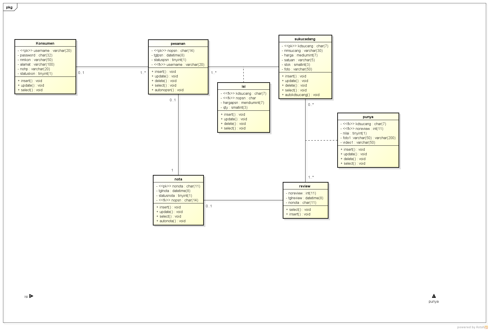

Nama : Putri Hertianti
Nim : 1811500098
Hasil saya mennyadur pertemuan 6:
penialian absen menggunakan file readme.md
pada pertemuan 6 memmbahas tentang class diagram
class diagram adalah penggambaran hubungan antar class atau dikenal dengan hubungan antar tabel
class digram terdiri dari :Nama class, atribut dan method
nama class adalah nama sebuah tabel
atribut diisi dengan field yang menjadi key,nama field tipe data ,lebar/panjang data
Menjelaskan tentang pembuatan class diagram

Download file astah usecase diagram disini